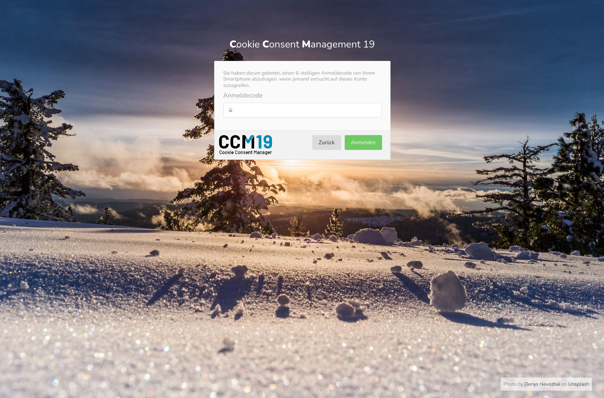
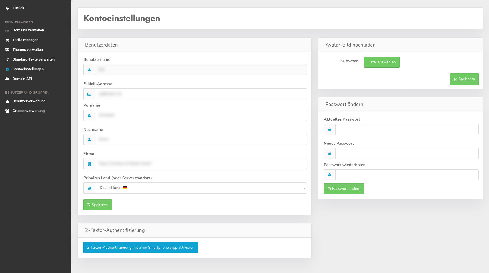
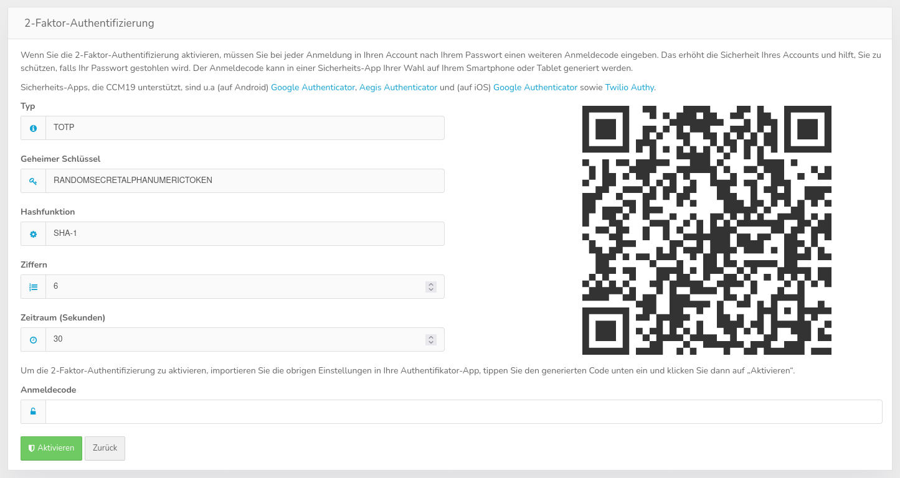
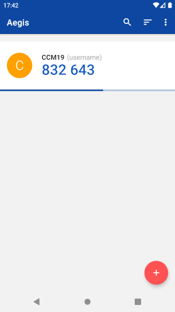
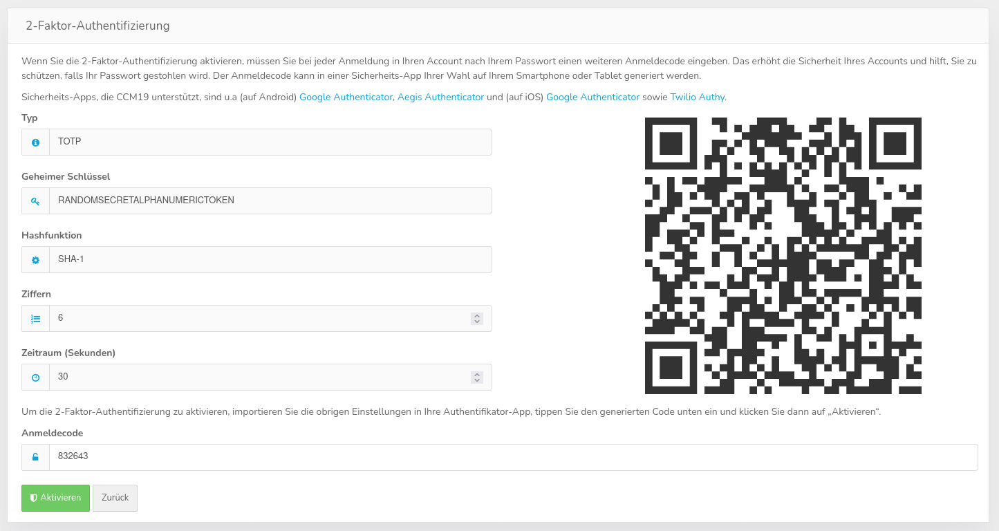
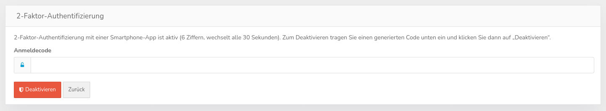

Mit diesem Plugin können Sie die Anmeldung Ihres Accounts zusätzlich absichern, indem nach der Passwortabfrage noch ein wechselnder Anmeldecode abgefragt wird, der auf Ihrem Smartphone oder Tablet generiert wird. Nur die erneute Anmeldung bei abgelaufener Session in einem Browserfenster, in dem das CCM19-Backend noch geöffnet ist, ist von der Codeeingabe ausgenommen.

Das Plugin muss in den On-Premise-Editionen in der Plugin-Verwaltung vom Administrator aktiviert und für Benutzer freigeschaltet werden. In den Cloud-Tarifen wird das Plugin im Laufe des Januars 2022 verfügbar sein.
Melden Sie sich in CCM19 an und öffnen Sie die „Kontoeinstellungen“ über das Benutzermenü oben rechts.
Klicken Sie dort unten auf „2-Faktor-Authentifizierung mit einer Smartphone-App aktivieren“. Fehlt dieser Button, ist das Plugin nicht aktiv oder noch nicht für Sie freigeschaltet.

Nachdem Sie auf den Button geklickt haben, öffnet sich ein Konfigurationsbereich mit einem zufällig generierten Schlüssel und einem QR-Code.

Installieren Sie eine Authentifizierungs-App auf Ihrem Smartphone, sofern noch nicht vorhanden. Im Einleitungstext des Formulars ist eine Auswahl von unterstützten Apps verlinkt.
Im folgenden wird der Ablauf anhand der App „Aegis Authenticator“ (verfügbar im Google Play Store und dem FDroid Store) demonstriert. Der Ablauf ist in anderen Apps weitgehend vergleichbar.
Öffnen Sie die Authentifizierungs-App auf Ihrem Smartphone und scannen Sie den QR-Code. Falls Sie das CCM19-Backend direkt auf Ihrem Smartphone geöffnet haben, tippen Sie stattdessen doppelt auf den QR-Code.
Die App sollte durch das Scannen des Codes die notwenigen Parameter automatisch importieren. Sollte das nicht funktionieren, können Sie die Daten auch manuell aus dem linken Bereich neben dem QR-Code übertragen.
Drücken Sie schließlich auf "Speichern". Sie sollten jetzt einen 6-stelligen Code sehen, der sich alle 30 Sekunden ändert.

Tippen Sie den generierten Code in das Feld „Anmeldecode“ und klicken Sie dann auf „Aktivieren“. Für das Klicken auf den Button haben Sie noch ca. 30 Sekunden Zeit nachdem der Code in der App gewechselt hat.

Wenn alles geklappt hat, erscheint ein Hinweis „2-Faktor-Authentifizierung erfolgreich aktiviert.“
Danach benötigen Sie für jede Anmeldung in CCM19 einen aktuellen Anmeldecode aus Ihrer App.
Melden Sie sich in CCM19 an und öffnen Sie die „Kontoeinstellungen“ über das Benutzermenü oben rechts.
Klicken Sie dort unten auf „2-Faktor-Authentifizierung mit einer Smartphone-App deaktivieren“.

Geben Sie einen aktuellen Anmeldecode aus Ihrer App ein und klicken Sie danach auf „Deaktivieren“.
Wenn alles geklappt hat, erscheint ein Hinweis „2-Faktor-Authentifizierung erfolgreich deaktiviert.“ und Sie benötigen keinen Anmeldecode mehr um sich in CCM19 anzumelden.
Falls Sie keine Anmeldecodes mehr erstellen können, nutzen Sie die „Passwort vergessen?“-Funktion im Anmeldefenster von CCM19.
Sie erhalten daraufhin eine E-Mail. Befolgen Sie die Anleitung in der Mail, um ein neues Passwort zu setzen. Mit dem neuen Passwort wird auch die 2-Faktor-Authentizifizerung zurückgesetzt.